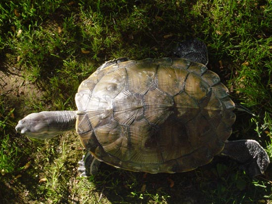
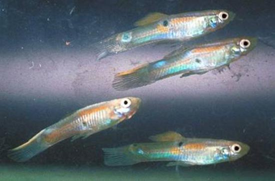
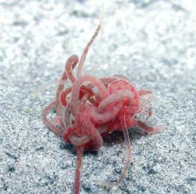
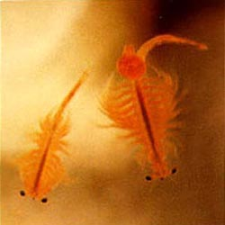
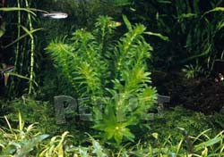
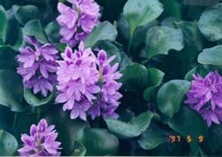
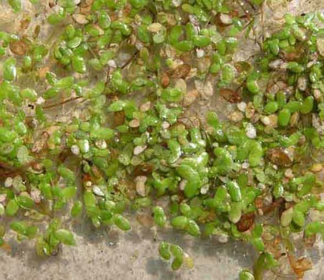
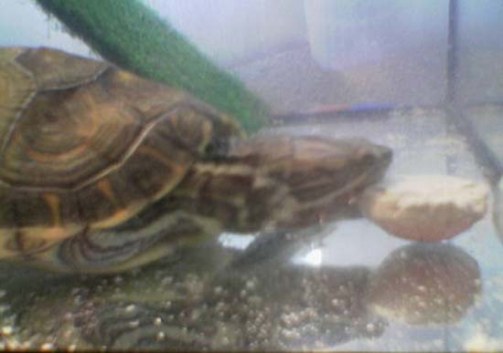
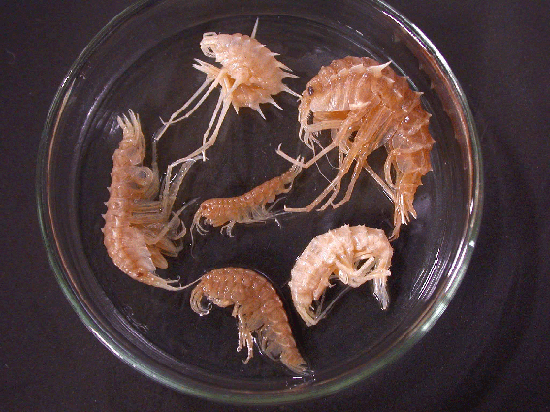

|
LA ALIMENTACI�N DE LAS TORTUGAS
ACU�TICAS
Mar�a Jos� Navarro, 2005
Hay una enorme variedad de tortugas consideradas acu�ticas o semiacu�ticas que proceden de h�bitats muy diversos y con costumbres
muy diferentes, por lo que hablar de tortugas acu�ticas resulta un
poco impreciso y ser�a inapropiado si habl�semos de otras condiciones
de mantenimiento. Pero, quiz�, podamos hacer la excepci�n de
referirnos a ellas en su conjunto para hablar de la alimentaci�n.
La alimentaci�n de las tortugas acu�ticas y semiacu�ticas es omn�vora,
aunque var�a la proporci�n de prote�nas, vegetales y frutas que
consumen en funci�n de la especie, del h�bitat y de la edad.
Son, esencialmente, carn�voras cuando son peque�as, ya que necesitan
altos contenidos de prote�na para afrontar las necesidades de su
r�pido crecimiento. Y son, esencialmente, herb�voras cuando son
adultas, que es cuando el crecimiento se ralentiza y necesitan ingerir
menos prote�nas. Adem�s, con la edad, pierden la agilidad que les
permite cazar presas vivas, por lo que se adaptan a un tipo de
alimentaci�n m�s vegetariana. Aunque nunca rechazan un pedacito de
carne, un gusano, un pececillo o cualquier otra prote�na, incluso
carro�a, que sea f�cil de conseguir.
Para precisar con m�s detalle la alimentaci�n, tomaremos como ejemplo
a las tortugas del g�nero Trachemys, que son las que con m�s
frecuencia se encuentran en las tiendas de animales. Las Trachemys, en
su ambiente natural, se alimentan b�sicamente de peque�os peces y
crust�ceos, caracolillos de agua, insectos, lombrices de tierra,
ranas, renacuajos, huevos de peces e insectos, larvas y plantas
acu�ticas, aunque tampoco desprecian la carro�a.

Trachemys
scripta emolli.
En
cautividad, es importante para asegurar su salud que tengan una dieta
variada, de la que pueden formar parte:
�
Algunos animales vivos, como grillos, tenebrios, lombrices de tierra,
caracoles de agua, guppies.... Los grillos y las lombrices de tierra
vivos son muy aconsejables para las tortugas, ya que contienen muchos
nutrientes, aunque hay discusiones acerca de la digestibilidad del
exoesqueleto de los grillos. Adem�s, les estimula perseguirlos y
cazarlos. En las tiendas de animales especializadas en reptiles y en
las de art�culos de pesca, se venden vivos y tambi�n se pueden criar
f�cilmente. Se les puede ofrecer larva roja, tub�fex, artemia
salina.
Los peque�os caracoles de agua representan un buen alimento natural y,
al mismo tiempo, ayudar�n a filtrar el agua porque se comen el
alimento que la tortuga no ingiere. Es siempre mejor criar el alimento
vivo, porque el silvestre puede transmitir muchos par�sitos.

Guppies.
(1)
|

Tubiflex.
(2) |

Artemia Salina.
(3) |
�
Carne cruda de ternera, vaca, pollo, pavo... Se le puede proporcionar
en peque�as cantidades porque tiene mucha grasa, con lo que puede
ocasionarle obesidad. Por otra parte, la proporci�n de Ca/P no es la
m�s adecuada (esta proporci�n deber�a ser, al menos, superior a 2).
Adem�s no le proporciona todos los nutrientes que la tortuga necesita.
Con el pollo crudo, hay que tener cuidado por una posible infecci�n
por salmonela. Se le puede ofrecer ocasionalmente un trozo de pollo,
preferiblemente cocido sin sal ni especias. Si la carne contiene
m�sculos, tendones y peque�os huesecillos, mejor. A medida que crecen
es conveniente sustituir la carne por el pescado.
�
H�gado crudo de ternera, pollo, o mejor todav�a de pescado, debe
formar parte una vez al mes de la dieta de la tortuga, porque aporta
vitaminas A y D.
�
Pescado crudo, preferiblemente de r�o. Lo m�s adecuado son los peces
peque�os enteros con espinas y v�sceras (tipo guppies, mejor si son
criados, porque los silvestres pueden ser portadores de bacterias).
Ocasionalmente se le pueden ofrecer otros tipos de pescado que
contengan peque�as espinas y v�sceras, porque son una importante
fuente de calcio y vitaminas. Los boquerones o charales frescos (no
secos) y las cabezas troceadas del pescado crudo son una buena opci�n.
�
Se les puede proporcionar tambi�n mejillones, gambas, almejas,
calamares crudos.
�
Ocasionalmente se les puede ofrecer huevo cocido con trozos de c�scara
(hay que lavar el huevo previamente y cocerlo sin sal).
�
Vegetales y frutas. Algunas tortugas aceptan bien: zanahoria, lechuga,
escarola, endibias, tomates, pepino, calabac�n, etc. (hay que evitar
las espinacas por el alto contenido en �cido ox�lico, que puede
alterar el funcionamiento del ri��n y produce c�lculo renales, y las
coles, que contienes tiocianatos que alteran la producci�n de hormona
tiroidea y pueden producir bocio). En peque�as cantidades y
ocasionalmente, se les puede incluir frutas como: manzana, pera,
higos, papaya, mel�n, pl�tanos, moras, etc. (evitando los c�tricos).
Hay que tener cuidado porque el exceso de fruta puede aumentar la
poblaci�n de par�sitos intestinales. Si la tortuga no acepta las
frutas y los vegetales, hay que agregar a su dieta un suplemento
vitam�nico con vitamina A. Cuando la tortuga crece, le encantar� comer
plantas acu�ticas, como: jacinto de agua (Eichhornia crassipes),
elodea (Egeria densa), lentejas de agua (Lemma minor)... Agregar
plantas acu�ticas al acuario o al estanque y a la dieta de la tortuga
es una excelente idea porque �stas contienen altos �ndices de vitamina
A y adem�s proporcionan un lugar para esconderse, ayudan a la
oxigenaci�n del agua y a su filtrado biol�gico. Deberemos estar
dispuestos a cambiar estas plantas con frecuencia porque las tortugas
acabar�n pronto con ellas.
|

Elodea
(Egeria densa).
(4) |

Jacinto
de agua (Eichhornia crassipes).
(5) |

Lentejas de agua
(Lemma minor).
(6)
�
El pienso para tortugas acu�ticas en forma de sticks, puede
proporcionar una buena base de la alimentaci�n de las tortugas
acu�ticas, aunque debe ser completado con el resto de los nutrientes.
Hay que elegir el que tenga el contenido nutricional m�s equilibrado,
que contenga alrededor del 35% de prote�na y adem�s calcio y
vitaminas. Algunos criadores utilizan tambi�n pienso para truchas y
pienso para gatos. Aunque hay que vigilar que el contenido no sea
demasiado graso ya que estos piensos est�n m�s dise�ados pensando en
un crecimiento r�pido de otros animales, sobre todo en el caso del
alimento para truchas.
� Hay que aportarles calcio, preferentemente en forma de carbonato
c�lcico, que se puede espolvorear sobre su comida. Pero dado que comen
en el agua, una gran parte de este calcio se perder� disuelto en ella.
Por eso es m�s importante que se les alimente de pescado que contenga
peque�as espinas que les proporcionar� el calcio que necesitan.
Tambi�n el hueso de sepia a�adido entero al acuario es una excelente
fuente de calcio para la tortuga, adem�s de que le ayudar� a afilar su
pico y sus u�as y la mantendr� ocupada intentando atraparlo. Se pueden
encontrar f�cilmente en la secci�n de aves de las tiendas de animales.

Mordisqueando el calcio.
�
S�lo en los casos en los que la tortuga no tenga una dieta
equilibrada, se pueden agregar suplementos vitam�nicos para tortugas
una o dos veces por semana, que incluyan vitamina A, pero con ciertas
precauciones porque la sobredosis de esta vitamina es tan perjudicial
como su carencia. La vitamina A es esencial para la salud ocular y el
buen estado de las mucosas y epitelios. La tortuga necesita tambi�n
vitamina D, que obtiene a partir de provitaminas que se ingieren con
los alimentos y que se activan por acci�n de la luz del sol (radiaci�n
UVB), transform�ndose en vitamina D3. En los casos en los que la
radiaci�n solar sea insuficiente, deber� proporcion�rsele vitaminas
del grupo D, sobre todo, vitamina D3 (colecalciferol). La vitamina D3
es esencial para el metabolismo del calcio, que permite fijar este
calcio en los huesos y el caparaz�n. Pero su exceso tambi�n es
peligroso.
En general, hay que evitar los alimentos elaborados (jam�n cocido,
salchichas...) los alimentos salados y especiados (jam�n serrano,
quesos, embutidos, fiambres...), los alimentos dulces (galletas,
chocolate...), las grasas (carne picada...) y, aunque las tortugas
pueden aceptar un trozo de pan, pizza, cereales, etc, no es
conveniente usar esos productos, a pesar de que est�n recomendados en
alguna bibliograf�a, ya que no son parte de su dieta natural y podr�an
ocasionarle alg�n trastorno.
En las tiendas de animales suelen ofrecer a las personas que compran
una peque�a tortuguita acu�tica, un botecito que contiene peque�as
larvas y gambitas o camaroncitos secos (gammarus) como alimento para
la tortuga. Los gammarus no son un alimento aconsejable en absoluto,
porque carecen de los nutrientes que la tortuga necesita para
desarrollarse de manera equilibrada. Las tortuguitas alimentadas con
gammarus muy pronto suelen presentar enfermedades nutricionales y
metab�licas graves (desnutrici�n, trastornos �seos de crecimiento, EOM,
etc) que podr�an ocasionarles la muerte. Tambi�n se ha relacionado los
gammarus con cierta bacteria que provoca SCUD (Enfermedad cut�nea
ulcerativa septic�mica relacionada con la podredumbre del caparaz�n y
que est� causada por infecci�n de hongos o de bacterias).

Gammarus.
(7)
En
cuanto a la frecuencia de la alimentaci�n, las tortugas acu�ticas
tienen un apetito voraz y piden continuamente alimento. Pero si se les
sobrealimenta pueden enfermar. Durante su primer a�o de vida se les
puede alimentar diariamente una sola vez al d�a. Durante su segundo
a�o, cada dos d�as y, posteriormente se les debe alimentar dos veces
por semana.
La cantidad de alimento es siempre un tema complejo, porque depende
del tipo de comida que se le proporcione, de la edad, del tama�o de la
tortuga y de la actividad que desarrolle. Pueden comer m�s cantidad
pero con menos frecuencia o una peque�a cantidad todos los d�as. Si el
alimento es m�s graso o con m�s contenido proteico, se le debe
suministrar menos cantidad con el fin de evitar la obesidad. Para
evaluar si la tortuga est� obesa, se puede observar si cuando esconde
la cabeza y las patas dentro del caparaz�n, la piel de alrededor se
despliega hacia afuera como si fueran bolsitas. En este caso se debe
revisar y cambiar la dieta y disminuir la frecuencia de alimentaci�n.
La gravedad que tiene la obesidad depende de la edad de la tortuga.
Una baby de pocos meses puede estar un poco �regordeta� porque su
crecimiento suele ser muy r�pido y pronto consumir� las reservas
acumuladas. Pero la obesidad en una adulta puede tener repercusiones
negativas sobre su salud.
No es necesario ofrecerles todos los nutrientes en cada comida, sino
alternar estos alimentos para que la tortuga no presente carencias
nutricionales. A veces las tortugas, tienen una dieta muy restringida
porque aceptan s�lo un tipo de alimento, en ese caso se les debe
acostumbrar poco a poco a comer de todo. Otras veces rechazan comer un
tipo de alimento que antes aceptaban y desean comer algo diferente.
Esto es normal, la alimentaci�n variada resolver� este problema. Lo
preocupante es cuando se niegan a comer completamente, esto es uno de
los s�ntomas de enfermedad.
BIBLIOGRAF�A
Avanzi, M. Y Millefanti, M. (2004) El gran libro de las tortugas.
Barcelona: Editorial De Vecchi
Fr�hlich, F. (1997) Tortugas de agua dulce. Barcelona: Ediciones
Omega
Millefanti, M. (2002) Las tortugas acu�ticas. Barcelona: Editorial
De Vecchi
M�ller, G. Tortugas terrestres y acu�ticas en el terrario.
Barcelona: Ediciones Omega.
Wilke, H. (2005) Tortugas. Barcelona: Hispano Europea.
(1)
Foto tomada de http://courses.washington.edu/fish340/
(2)
Foto tomada de http://www.akvariumas.lt/straipsniai/zuvu_maitinimas.shtml
(3)
Foto tomada de http://www.acuariolasmercedes.com/artemia-salina-reservacion.htm
(4)
Foto tomada de http://www.petpet.ne.jp/zukan/wplantinfo.asp?page=1&Kind=66
(5)
Foto tomada de http://biotech.tipo.gov.tw/plantjpg/Eichhornia%20crassipes.jpg
(6)
Foto tomada de http://www.fungoceva.it/erbe_ceb/lemma_minor.htm
(7)
Foto tomada de
http://www.hokudai.ac.jp/science/science/H16_11/seibutsu/mawatari_kajihara.htm
|